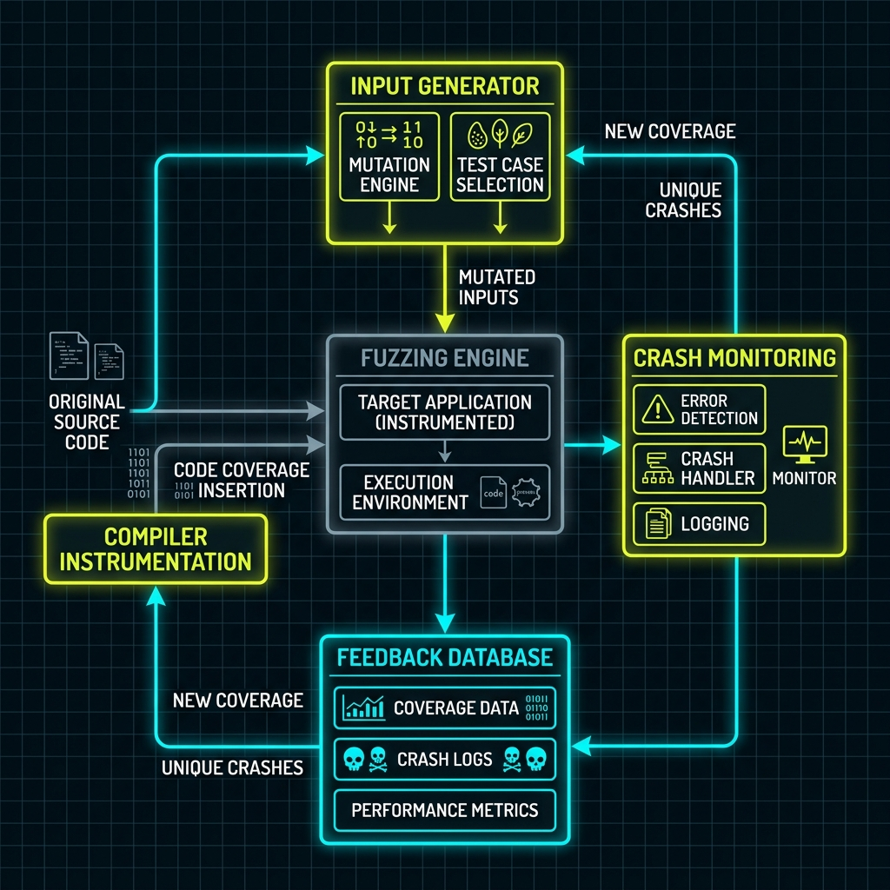

Série: Blindagem de Sistemas — Módulo 06
Copilotos de Defesa: Fuzzing e Análise Dinâmica com IA

Nota do Desenvolvedor: O caso a seguir representa uma simulação prática de engenharia com base em ameaças e ocorrências reais do ecossistema corporativo.
1. O Incidente: O Servidor que Travava em Ambientes de Teste
Durante a migração de um microsserviço de mensageria assíncrona, a equipe de engenharia identificou instabilidades graves quando a aplicação era submetida a fluxos intermitentes de pacotes deformados na rede. Em vez de simplesmente descartar as mensagens inválidas, o servidor alocava buffer dinâmico de forma desordenada no Heap, culminando em travamento por exaustão de recursos.
Sem tempo para contratar consultorias especializadas de auditoria de código externa, a engenharia ativou uma esteira de testes automatizada para segurança de software. O fluxo combinou testes dinâmicos de carga direcionados por modelos de inteligência artificial de segurança rodando localmente na infraestrutura privada de integração contínua (CI/CD). O sistema simulou milhares de requisições de formatos inesperados e de alta concorrência em tempo recorde.
"Fuzzing é como contratar aquele testador obstinado que não lê manuais e tenta enfiar uma banana na entrada do cartão de crédito do caixa eletrônico para ver se o sistema operacional trava. A IA atua acelerando esse processo: ela lê o esqueleto do seu código e programa esse teste de estresse de forma automática, descobrindo em minutos o que um hacker levaria dias para bolar."
2. O Diagnóstico: O Ciclo de Desenvolvimento Seguro Moderno

Integrar a validação de segurança no ciclo de vida de desenvolvimento de software evita retrabalhos caros na esteira de produção. Esse processo opera em duas frentes fundamentais:
- Testes de Segurança Ativos e Dinâmicos: Diferente da simples leitura de texto nas linhas do código, os testes de análise dinâmica expõem a aplicação ativa a entradas inconsistentes na memória RAM para monitorar o surgimento de comportamentos indefindos ou estouros de pilha.
- Heurística de Fuzzing de Cobertura: Ferramentas como AFL++ geram entradas aleatórias de forma matemática. A inteligência artificial entra otimizando a geração dos payloads de teste baseada no mapa de execução real da aplicação, elevando a cobertura para patamares superiores a 90% do código compilado.
3. Mitigação: Como Estruturar o Pipeline de Defesa
A auditoria da API Pix foi bem-sucedida e o pipeline foi padronizado no fluxo contínuo:
- Fuzzing no Build: Configurar motores de análise de dados nativos integrados ao compilador da linguagem durante a esteira de construção (Build Pipeline).
- Agentes Locais de Triagem: Utilizar IAs leves rodando localmente no CI/CD para catalogar falsos positivos nos logs de exceção gerados, evitando ruídos excessivos para as equipes de engenharia durante o desenvolvimento.
Revisão de Linha de Frente (Resumo do Aprendizado)
- Defesa na Velocidade do Ataque: Se invasores usam inteligência artificial para mapear brechas, a engenharia deve rodar testes contínuos assistidos por IA defensiva em tempo de desenvolvimento.
- Fuzzing Inteligente: A técnica definitiva para identificar anomalias lógicas e comportamentos indefinidos simulando fluxos que fogem ao caminho feliz planejado.
- Segurança Automatizada na Esteira: Segurança integrada no código de forma transparente como parte da esteira industrial de compilação diária.
- Robustez Sistêmica: O foco muda de apenas passar em checklists de conformidade burocrática para a garantia física de que a aplicação rejeita dados deformados sem travar a CPU.
Dicionário de Trincheira (Para Leigos e Executivos)
- Desenvolvimento Seguro Integrado: O conceito de envolver testes e proteções de segurança no próprio fluxo contínuo de engenharia de software, em vez de tratá-los como etapas burocráticas ou separadas que barram publicações no fim do projeto.
- Validação Dinâmica de Código: O teste de estresse e resiliência que analisa o comportamento da aplicação enquanto ela é executada ativamente na memória.
- Falsos Positivos: O alarme de incêndio disparado pela fumaça de um cigarro ou pela poeira da reforma. Avisos de falha que exigem triagem humana para não interromper a produtividade das equipes sem necessidade real.
- Segurança Dinâmica Híbrida (Hybrid Fuzzing): A evolução dos testes de fadiga que utiliza análise lógica do comportamento interno da aplicação para otimizar e gerar de forma inteligente apenas as entradas de rede que testam áreas do código que ainda não foram validadas.
— Fim do Módulo 06. Continua no Módulo 07: Defesa de Tese. Índice da série em: Chamada e Índice.